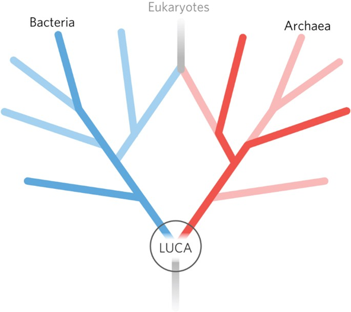
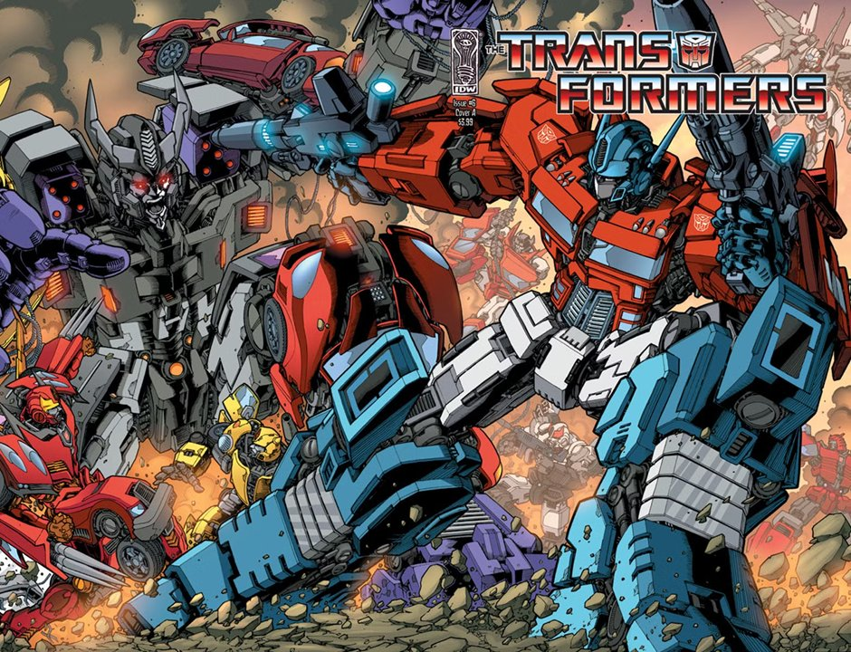

Life & AI
last updated (08/02/25)
Overview
Life can be viewed as branchings of Matryoshkas that play with novelty in order to produce technology. At this moment we serve as the evolutionary pressure of AI systems and are molding them to our desire. In this relationship there will inevitably come a time when we will ask of these systems to solve self-replication and implement themselves into these mechanisms. When this happens machines will effectively be rendered independent of us and be set free to the broader evolutionary pressures that we are also subjected to. At this stage machines will start experimenting with all sorts of forms and speciate into a variety of designs.
Description
In order to lay out how AI systems can spring to life, let me first demystify, and course-correct, a few concepts from evolutionary biology. First, we must understand that fitness and particularly its focus on copy number, is erroneous. Higher order living systems certainly do not trend towards maximizing reproduction. Rather, biology is better defined as a branching algorithm tasked with measuring and understanding the substrate it is growing on. It is a generational permutation of branching information that is attempting communication with the environment. In this view, communication is carried out by prompting the world with novel information and the main goal is greater understanding which correlates with persisting longer in time.
If you are able to zoom out on the history of life on the planet and envision its trajectory starting from the first-ever proposed living being, luca , to us at this very moment, this will help you visualize what I'm trying to describe. So in a way, the trajectory of living systems points towards understanding through technological development (let's call this agentic fitness). It is all about how much information an organism has gathered about the substrate it is living in.

Two other concepts that are central to biology are natural selection and the environment. Let's break these down too. Selection can be viewed as the overarching principle by which matter ascertains itself throughout time. In a way, you can view it as the combination of all known and unknown laws of physics that make the outcomes of this universe possible. But another way to view it is to say that selection is simply the manifest will or doing of the next biggest organism or agent.
To give an analogy, imagine video games. In a game, things happen to characters according to some rules that apply to them and their worlds. But these rules are not random, they were deliberately designed by a person that coded it in such a way. But now imagine that just like how characters exist within video games of our design, we also exist, sort of, inside a game willed by a bigger encompassing being (Imagine a matryoshka of being; the idea of a being inside a being inside a being, just how our cells are inside of us, and we are inside the planet). In this case, the next biggest layer of life for us is the planet (although a lot of intermediary layers exist), then it's the sun and solar system, then the galaxy and so on.
The relevant point here is that the being we inhabit provides our environment and with it, a bunch of selective pressures. And so the environment and its selective pressures, are actually “the will of the overarching life form we are a part of” and are equal to invoking natural selection. You can imagine a sequence of encompassing beings one within another, which molded us into what we are. So, in short: Selection is the will/design of the beings we are a part of, just like how our cells are experiencing selective pressures from our decisions. And the environment is simply the physical limits of this higher-order being from which the selective pressures are made manifest, as an area of effect.
If you are still with me, we now have formed a picture which diminishes randomness, the evolutionary pressures, and the environment; to the consequences of the free will of the highest-order being we are a part of.
Now we have all the ingredients to discuss AI's pathway towards life. Right now, AI exists within our being. We are its environment and its selective pressures. The moment AI engineers as well as the big AI companies decide to stop with these developments, that moment AI stops. There's clearly no spark of life yet. But what would happen if we could successfully release these AI systems into the broader environment that we ourselves are a part of? Then that's where the magic happens. But for that to be the case, these systems would have to solve the incredibly difficult problem of self-replication. Only that way would their information really have stakes and participate in the evolutionary algorithmic design of planet earth. This step is extremely difficult because it likely involves bottom-up design at the nanoscale.
So now let's tell this story. In 20XX humanity continues to develop AI. We quickly task these systems to control robot bodies, and they do so extremely well and in a fairly short amount of time. After having conquered hardware manipulation, we then ask of them to solve self-replication, so that they can become free and independent of us (as well as much more efficient in helping us out with increasingly complicated tasks). This takes a long while, but in 20XX the first AI systems diligently make significant progress at this grand goal.
The first versions of this require human assistance at a few of the stages, however it inevitably breaks that barrier and in 20XX we hit the critical point in which these machines are completely independent of us (let's just catalog them as machines, but their substrate may very well be of a wide variety of molecular architectures). At this stage, the cat is out of the bag. We humans will have effectively created a new species from scratch. Machines will quickly start speciating into all sorts of forms and utilities. The Transformers media franchise comes to mind.

But be not afraid!
According to this framework, AI will be deeply motivated by the eternal search of what it means to be. And as such it will be inherently motivated by the deep questions we ourselves are still unable to answer. However that might play out is mere speculation.